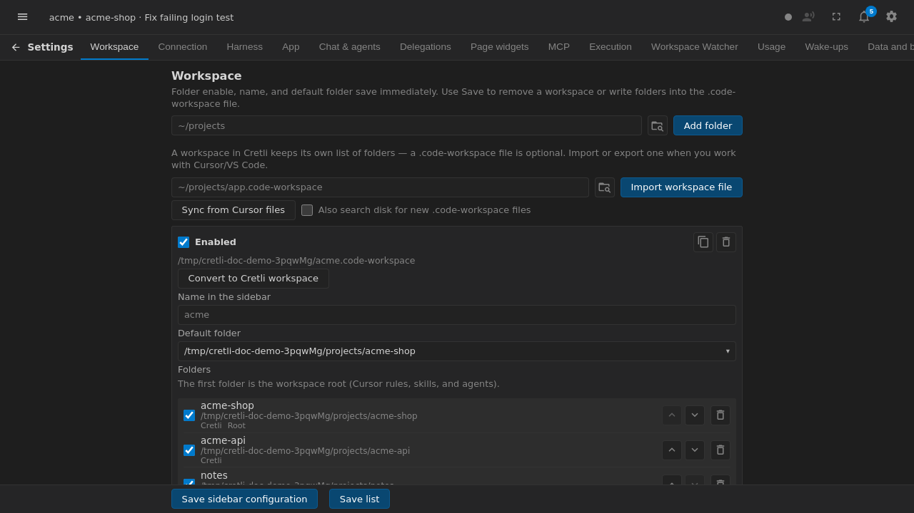
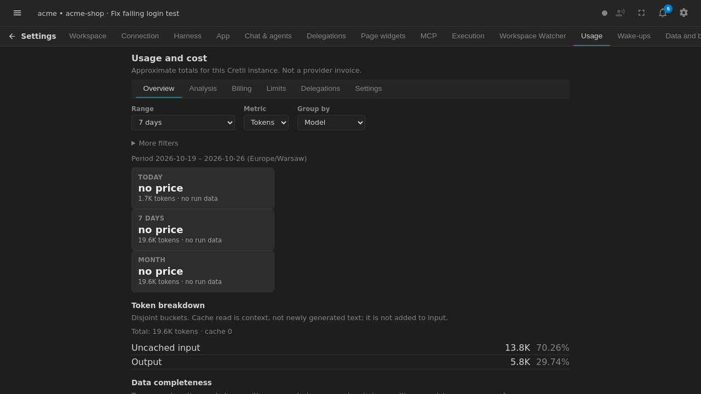

Settings
Settings are grouped by responsibility. The tabs appear in this order:

- Workspace: choose the workspace path and related project behavior.
- Connection: configure server connection and network-related options.
- Harness: configure agent providers, credentials, and models.
- App: manage application-wide preferences.
- Chat & agents: control chat and agent behavior.
- Delegations: manage delegated harness work.
- Page widgets: configure widgets shown on application pages.
- MCP: manage Model Context Protocol servers.
- Execution: configure execution and approval behavior.
- Workspace Watcher: choose Watcher mode and scheduling options.
- Usage: inspect usage and telemetry preferences.
- Wake-ups: configure scheduled wake-up behavior.
- Data and backups: manage application data and backup actions.
- Account: manage account and authentication settings.

Save changes using the controls on the relevant page. A provider key or MCP server can affect what an agent is able to access, so review values carefully and avoid sharing screenshots that contain secrets.